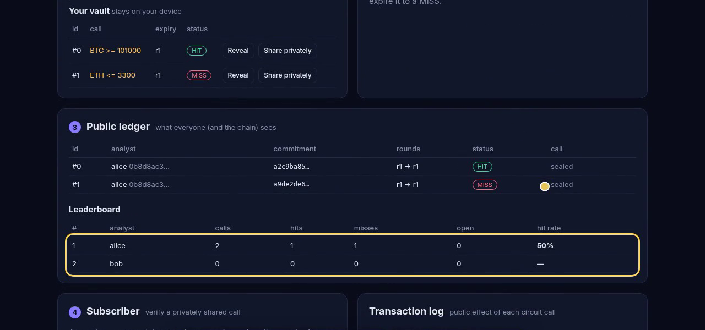

Zero-knowledge trading calls on Midnight, written in Compact
github.com/northbit-dev/callseal · northbit-dev.github.io/callseal
Winners get posted, losers get deleted. A "78 % hit rate" is whatever the seller decides to show.
Posting every call openly proves the record, but gives the product away to non-payers and front-runners.
"Verified" signal sites see every call. The analyst has to trust the platform, and so does the buyer.
Telegram and Discord groups, newsletters and research desks all run on the same thing: trust in a number that can't be audited.
| public ledger | analyst's device | |
|---|---|---|
| analyst | key, calls, hits, misses | secret key |
| call | commitment, rounds, status | asset, side, level, salt |
| oracle | closes per round | oracle key |
What leaks by design is the track record itself: who called, when, and whether it hit.
sealCall stores H(author, H(opening)). The proof also checks the level is at least 2 % from the last close, so trivial calls can't farm hits.
publishCloses: only the oracle key can post the closes for a round. The oracle never sees any call.
proveHit opens the commitment inside the proof and checks it beats the expiry close. The chain learns only HIT.
expireCall: after the grace window, anyone can turn an unproven call into a MISS.
Enforced inside the proof: commitments are bound to their author, so copies can't be proven · calls can't be edited after sealing · no proving before the close or after the window · no double settlement · hedging both sides still scores a MISS. proveHit reads the full close vector, so its public transcript is identical whatever asset the call was on.
Private state: secret key and call openings. Witnesses localSecretKey, pendingCall, storedOpening feed the circuits.
Generates the ZK proof from the compiled circuit (compactc 0.31.1, proof server 8.1.3). Only public outputs leave it.
Contract with 6 circuits: commitments, rounds, closes, status and per-analyst stats. Read back through the indexer.
Contractcontract/src/callseal.compact
Shared logic
witnesses, commitments and a simulator, used by Node and the browser
Clients
static web demo, CLI demo, network runner using midnight-js 4.1.1
Contract 5a5f66f9c70bad0470f50716dcdf130a33f3f40932df387e9d423ac7fa4e6db0 · preview.midnightexplorer.com
| step | tx hash | block |
|---|---|---|
| deploy | ca04ff67ce5be0aacf3704eb5d9609957816d7f343fa36b57c29aaeb5b9749d7 | 1517967 |
| oracle.publishCloses (round 0) | 0a330c0a9e3b0439eacedd26f74f4a5abdb0923cd2a42a257a0892fe6b13fba1 | 1517970 |
| alice.registerAnalyst | 59c0aebcddcee7456b8d18427255abed21fcc97b955d887fad69a829d7dfdcde | 1517973 |
| alice.sealCall #0 | ac4b3e968914a5f4da2c5087aa4dd545dccf1a02438179d6d9829e9ba65b1f05 | 1517976 |
| alice.sealCall #1 | 25cc5aedbfebb2fe60e137396b66e35069ee59db6c8e5f1839ce81c1a6096796 | 1517979 |
| oracle.publishCloses (round 1) | 9dcd644b401a6c4a8df2a40da35bd945979926bfae84c221656aae0a7d5e7dfa | 1517982 |
| alice.proveHit #0 HIT | 74f248faa0cf23567b77f8cd97b71169a8591281a2968d8b58434376b4fe7f59 | 1517985 |
| oracle.publishCloses (round 2) | 3f177e02eefdddfc70dcd63332a9adec3e54a56e9f6b3a2c5e0349011c8809a6 | 1517988 |
| anyone.expireCall #1 MISS | f6756f6f7534b7fef0204ff6c117ce7b394d7072deacde51dd6a33000ac6806d | 1517991 |
| alice.revealCall #0 (optional) | da80936ba0dcc0a6436e5725747474d8aec5dcd4e9b22e8c72ea1d5d37180004 | 1517995 |

northbit-dev.github.io/callseal
No wallet needed. Nothing leaves the tab.
Signal groups · research newsletters · prop-firm hiring on a verifiable record · copy trading